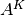
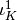
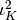
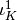
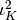

PyOP2 Linear Algebra Interface¶
PyOP2 supports linear algebra operations on sparse matrices using a thin wrapper around the PETSc library harnessed via its petsc4py interface.
As described in PyOP2 Concepts, a sparse matrix is a linear operator that maps a DataSet representing its row space to a DataSet representing its column space and vice versa. These two spaces are commonly the same, in which case the resulting matrix is square. A sparse matrix is represented by a Mat, which is declared on a Sparsity, representing its non-zero structure.
Sparse Matrix Storage Formats¶
PETSc uses the popular Compressed Sparse Row (CSR) format to only store the non-zero entries of a sparse matrix. In CSR, a matrix is stored as three one-dimensional arrays of row pointers, column indices and values, where the two former are of integer type and the latter of float type, usually double. As the name suggests, non-zero entries are stored per row, where each non-zero is defined by a pair of column index and corresponding value. The column indices and values arrays therefore have a length equal to the total number of non-zero entries. Row indices are given implicitly by the row pointer array, which contains the starting index in the column index and values arrays for the non-zero entries of each row. In other words, the non-zeros for row i are at positions row_ptr[i] up to but not including row_ptr[i+1] in the column index and values arrays. For each row, entries are sorted by column index to allow for faster lookups using a binary search.

A sparse matrix and its corresponding CSR row pointer, column indices and values arrays
For distributed parallel storage with MPI, the rows of the matrix are distribued evenly among the processors. Each row is then again divided into a diagonal and an off-diagonal part, where the diagonal part comprises columns i to j if i and j are the first and last row owned by a given processor, and the off-diagonal part all other rows.

Distribution of a sparse matrix among 3 MPI processes
Matrix assembly¶
Sparse matrices are assembled by adding up local contributions which are mapped to global matrix entries via a local-to-global mapping represented by a pair of Maps for the row and column space.

Assembly of a local tensor  into a global matrix  using
the local-to-global mapping  for rows and 
for columns
using
the local-to-global mapping  for rows and 
for columns
For each par_loop() that assembles a matrix, PyOP2 generates a call to PETSc‘s MatSetValues function for each element of the iteration set, adding the local contributions computed by the user kernel to the global matrix using the given Maps. At the end of the par_loop() PyOP2 automatically calls MatAssemblyBegin and MatAssemblyEnd to finalise matrix assembly.
Consider assembling a Mat on a Sparsity built from a Map from elements to nodes. The assembly is done in a par_loop() over elements, where the Mat A is accssed indirectly via the elem_node Map using the IterationIndex i:
nodes = op2.Set(NUM_NODES, "nodes")
elements = op2.Set(NUM_ELE, "elements")
elem_node = op2.Map(elements, nodes, 3, ...)
sparsity = op2.Sparsity((nodes, nodes), (elem_node, elem_node))
A = op2.Mat(sparsity, np.float64)
b = op2.Dat(nodes, dtype=np.float64)
# Assemble the matrix mat
op2.par_loop(mat_kernel, elements,
A(op2.INC, (elem_node[op2.i[0]], elem_node[op2.i[1]])),
...)
# Assemble the right-hand side vector b
op2.par_loop(rhs_kernel, elements,
b(op2.INC, elem_node[op2.i[0]]),
...)
The code generated for the par_loop() assembling the Mat for the sequential backend is similar to the following, where initialisation and staging code described in Sequential backend have been omitted for brevity. For each element of the iteration Set a buffer for the local tensor is initialised to zero and passed to the user kernel performing the local assembly operation. The addto_vector call subsequently adds this local contribution to the global sparse matrix.
void wrap_mat_kernel__(...) {
...
for ( int n = start; n < end; n++ ) {
int i = n;
...
double buffer_arg0_0[3][3] = {{0}}; // local tensor initialised to 0
mat_kernel(buffer_arg0_0, ...); // local assembly kernel
addto_vector(arg0_0_0, buffer_arg0_0, // Mat objet, local tensor
3, arg0_0_map0_0 + i * 3, // # rows, global row indices
3, arg0_0_map1_0 + i * 3, // # cols, global column indices
0); // mode: 0 add, 1 insert
}
}
Building a sparsity pattern¶
The sparsity pattern of a matrix is uniquely defined by the dimensions of the DataSets forming its row and column space, and one or more pairs of Maps defining its non-zero structure. This is exploited in PyOP2 by caching sparsity patterns with these unique attributes as the cache key to save expensive recomputation. Whenever a Sparsity is initialised, an already computed pattern with the same unique key is returned if it exists.
For a valid sparsity, each row Map must map to the set of the row DataSet, each column Map to that of the column DataSet and the from sets of each pair must match. A matrix on a sparsity pattern built from more than one pair of maps is assembled by multiple parallel loops iterating over the corresponding iteration set for each pair.
Sparsity construction proceeds by iterating each Map pair and building a set of indices of the non-zero columns for each row. Each pair of entries in the row and column maps gives the row and column index of a non-zero entry in the matrix and therefore the column index is added to the set of non-zero entries for that particular row. The array of non-zero entries per row is then determined as the size of the set for each row and its exclusive scan yields the row pointer array. The column index array is the concatenation of all the sets. An algorithm for the sequential case is given below:
for rowmap, colmap in maps:
for e in range(rowmap.from_size):
for i in range(rowmap.arity):
row = rowmap.values[i + e*rowmap.arity]
for d in range(colmap.arity):
diag[row].insert(colmap.values[d + e * colmap.arity])
For the MPI parallel case a minor modification is required, since for each row a set of diagonal and off-diagonal column indices needs to be built as described in Sparse Matrix Storage Formats:
for rowmap, colmap in maps:
for e in range(rowmap.from_size):
for i in range(rowmap.arity):
row = rowmap.values[i + e*rowmap.arity]
if row < nrows:
for d in range(colmap.arity):
if col < ncols:
diag[row].insert(colmap.values[d + e*colmap.arity])
else:
odiag[row].insert(colmap.values[d + e*colmap.arity])
Solving a linear system¶
PyOP2 provides a Solver, wrapping the PETSc KSP Krylov solvers which support various iterative methods such as Conjugate Gradients (CG), Generalized Minimal Residual (GMRES), a stabilized version of BiConjugate Gradient Squared (BiCGStab) and others. The solvers are complemented with a range of preconditioners from PETSc‘s PC collection, which includes Jacobi, incomplete Cholesky and LU decompositions and various multigrid based preconditioners.
The choice of solver and preconditioner type and other parameters uses PETSc‘s configuration mechanism documented in the PETSc manual. Options are pased to the Solver via the keyword argument parameters taking a dictionary of arguments or directly via keyword arguments. The solver type is chosen as ksp_type, the preconditioner as pc_type with the defaults cg and jacobi.
Solving a linear system of the matrix A assembled above and the right-hand side vector b for a solution vector x is done with a call to solve(), where solver and preconditioner are chosen as gmres and ilu:
x = op2.Dat(nodes, dtype=np.float64)
solver = op2.Solver(ksp_type='gmres', pc_type='ilu')
solver.solve(A, x, b)
GPU matrix assembly¶
In a par_loop() assembling a Mat on the GPU, the local contributions are first computed for all elements of the iteration set and stored in global memory in a structure-of-arrays (SoA) data layout such that all threads can write the data out in a coalesced manner. For the example above, the generated CUDA wrapper code is as follows, again omitting initialisation and staging code described in CUDA backend. The user kernel only computes a single element in the local iteration space as detailed in Local iteration spaces.
__global__ void __mat_kernel_stub(...,
double *arg0, // local matrix data array
int arg0_offset, // offset into the array
... ) {
... // omitted initialisation and shared memory staging code
for ( int idx = threadIdx.x; idx < nelem; idx += blockDim.x ) {
... // omitted staging code
for ( int i0 = 0; i0 < 3; ++i0 ) {
for ( int i1 = 0; i1 < 3; ++i1 ) {
mass_cell_integral_0_otherwise(
(double (*)[1])(arg0 + arg0_offset + idx * 9 + i0 * 3 + i1 * 1),
..., i0, i1);
}
}
}
}
A separate CUDA kernel given below is launched afterwards to compress the data into a sparse matrix in CSR storage format. Only the values array needs to be computed, since the row pointer and column indices have already been computed when building the sparsity on the host and subsequently transferred to GPU memory. Memory for the local contributions and the values array only needs to be allocated on the GPU.
__global__ void __lma_to_csr(double *lmadata, // local matrix data array
double *csrdata, // CSR values array
int *rowptr, // CSR row pointer array
int *colidx, // CSR column indices array
int *rowmap, // row map array
int rowmapdim, // row map arity
int *colmap, // column map array
int colmapdim, // column map arity
int nelems) {
int nentries_per_ele = rowmapdim * colmapdim;
int n = threadIdx.x + blockIdx.x * blockDim.x;
if ( n >= nelems * nentries_per_ele ) return;
int e = n / nentries_per_ele; // set element
int i = (n - e * nentries_per_ele) / rowmapdim; // local row
int j = (n - e * nentries_per_ele - i * colmapdim); // local column
// Compute position in values array
int offset = pos(rowmap[e * rowmapdim + i], colmap[e * colmapdim + j],
rowptr, colidx);
__atomic_add(csrdata + offset, lmadata[n]);
}
GPU linear algebra¶
Linear algebra on the GPU with the cuda backend uses the Cusp library, which does not support all solvers and preconditioners provided by PETSc. The interface to the user is the same as for the sequential and openmp backends. Supported solver types are CG (cg), GMRES (gmres) and BiCGStab (bicgstab), with preconditioners of types Jacobi (jacobi), Bridson approximate inverse (ainv) and asymptotic multigrid (amg). An exception is raised if an unsupported solver or preconditioner type is requested. A Cusp solver with the chosen parameters is automatically generated when solve() is called.
Note
Distributed parallel linear algebra operations with MPI are currently not supported by the cuda backend.